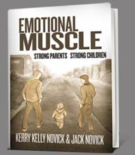

Emotional Muscle
Kerry Kelly Novick & Jack Novick, PhD
Build your child's emotional muscle with thoughtful, positive parenting, for a lifetime of happiness, independence and self-esteem.

All parents want their children to have healthy bodies with strong physical muscles. They also want their children to grow up to be successful, kind, responsible, creative, and good.
What if everything you do with your child included an extra dimension, one that will help develop character, courage, satisfaction, and emotional strength?
What if each part of the day added value to your life and your child's development?
What if simple actions could offer wellsprings of happiness, promote learning, and foster friendships?
All these things are possible, by building what we call "emotional muscle." Based on our decades of experience as child psychoanalysts and as founders of an innovative, award-winning, nonprofit preschool, our new book, Emotional Muscle: Strong Parents, Strong Children, is filled with parenting tips for the first five years of your child's life, offering opportunities for emotional muscle-building at every stage.
-Cathy, mother of two